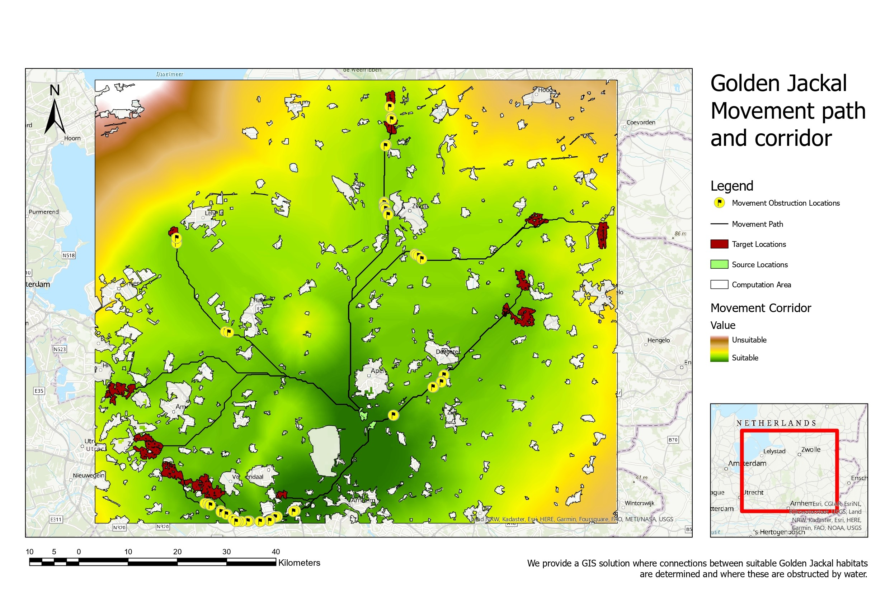
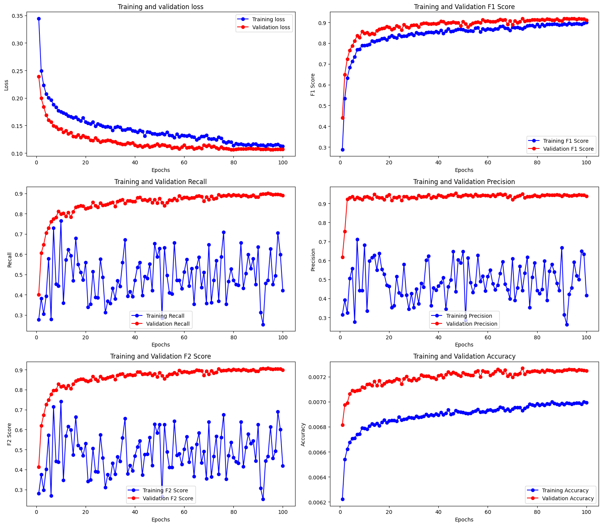
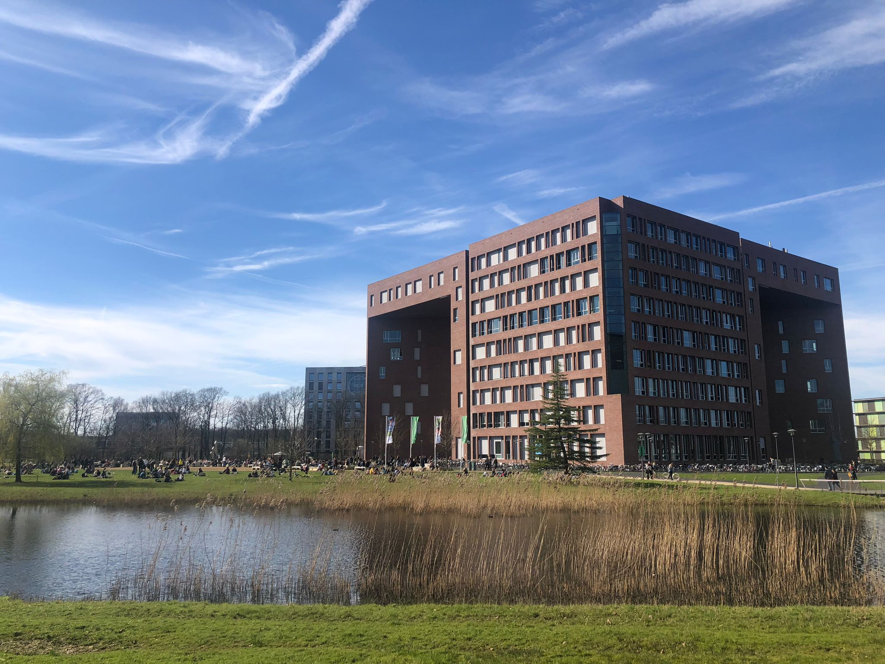

Advancing Nature-based Solutions
with Earth Observation & AI
I am Takayuki Ishikawa — Remote Sensing Specialist at the
Food and Agriculture Organization of the United Nations (FAO) in Rome.
I combine deep learning, satellite imagery, and 15+ years of forest policy experience
to support global forest monitoring and sustainable land management.
Skills & Expertise
Earth Observation & GIS
Google Earth Engine
ArcGIS / QGIS
Multispectral
SAR (Radar)
LiDAR
Time-series Analysis
Photointerpretation
AI / Machine Learning
Deep Learning
PyTorch
CNN / ViT
Tree Species Classification
Land-use Mapping
Object Detection
Programming
Python
R
Java
HTML / CSS
Linux / Bash
Git
Slurm (HPC)
Forest & Climate Policy
UNFCCC
REDD+
Paris Agreement Art. 6
JCM Carbon Credits
National Forest Mgmt
Green Climate Fund
Experience
Oct 2025 – Present
Food and Agriculture Organization of the UN — Rome, Italy
Remote Sensing Specialist, Forestry Division
Land-use label collection via satellite photointerpretation for the FAO Forest Resource Assessment (FRA) Remote Sensing Survey.
Constructing and evaluating AI models for automated land-use and land-use change classification.
Sep 2023 – Aug 2025
Wageningen University & Research — Wageningen, Netherlands
MSc Geo-information Science
Deep learning for tree species classification (Dutch National Forest Inventory), canopy height modeling,
agroforestry crop identification, and historical land-use change detection using multi-source satellite data.
Apr 2021 – Aug 2023
Forest Agency, Japan — Tokyo
Assistant Director, International Forestry Cooperation Office
Japanese REDD+ focal point at COP26, COP27 & SB58. Managed JCM afforestation/reforestation projects
in Cambodia. Represented Japan at the World Bank Forest Carbon Partnership Facility.
Apr 2018 – Mar 2021
Consulate General of Japan — Seattle, USA
Consul
Promoted Japan–US AI and technology partnerships. Supported ML-focused meet-up events
connecting Seattle-area startups with Japanese investors.
Apr 2015 – Mar 2018
Forest Agency, Japan — Tokyo
Chief, National Forest Management Division
Led budgetary and legal coordination for national forest management.
Established Japan-wide drone usage regulations for national forests and standardized operational procedures across regional offices.
Apr 2009 – Mar 2015
Forest Agency / Ministry of Internal Affairs — Japan
Forestry Officer & Local Finance Chief
Oversaw 2,000 ha of national forest in Shikoku region. Developed forest policy documents
and coordinated local government finance for wildlife and marine debris legislation.
Portfolio
Highlights from my MSc research in GIS, remote sensing, and machine learning.
View Full Visualization Portfolio

Land Classification by Machine Learning

Multi-label Classification via Deep Learning

MobileNet3 Fine-Tuning Training History

Confusion Matrix — MobileNet3 Fine-Tuning

And more — visit the full portfolio
Publications
Peer-reviewed Preprint · 2025
Ishikawa, T., Bonannella, C., Lerink, B. J. W., & Rußwurm, M. (2025).
Assessing the Effectiveness of Deep Embeddings for Tree Species Classification in the Dutch Forest Inventory.
arXiv preprint. Under review.
DOI: 10.48550/arXiv.2508.18829
UNFCCC Technical Review · 2025
Expert reviewer for the technical assessment of proposed REDD+ forest reference emission levels from Costa Rica (2025) under the UNFCCC Enhanced Transparency Framework.
About Me
I am Takayuki Ishikawa, a Remote Sensing Specialist at the Food and Agriculture Organization of the United Nations (FAO) based in Rome, Italy, working on the global Forest Resource Assessment Remote Sensing Survey.
Before joining FAO, I completed an MSc in Geo-information Science at Wageningen University & Research (2023–2025), where I focused on deep learning for tree species classification and satellite-based land-use change detection.
Prior to academia, I spent over 15 years as a Japanese government officer at the Forest Agency, serving as the national REDD+ focal point at UNFCCC conferences (COP26, COP27) and designing afforestation frameworks under the Joint Crediting Mechanism. I am a certified UNFCCC technical reviewer for Biennial Transparency Reports and REDD+ reference levels.
My work sits at the intersection of Earth observation, AI/ML, and international climate policy — translating satellite data into actionable insights for forest conservation and carbon accounting.
Contact
Have a question or a collaboration idea? Feel free to reach out.